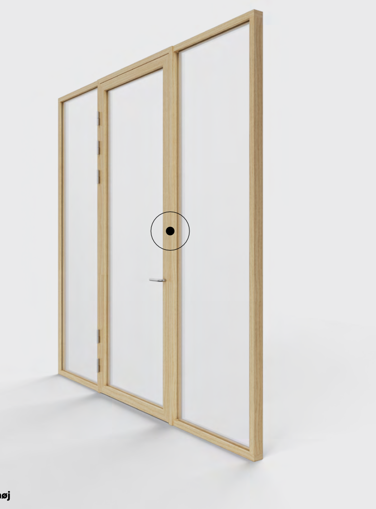
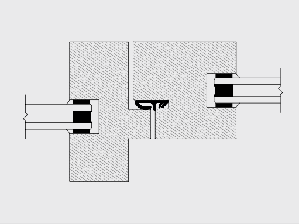

Enkelt glasrammedør væghøj
Dør i glas og ramme.
LYDKLASSIFIKATION
Op til Rw 35 dB for dør
BRANDKLASSIFIKATION
Op til EI60 for dør
Dørformat op til 11 x 31 M
Op til 4 m inkl. overglas afhængigt af krav til dør
45 graders samling
En af de helt særlige ting ved DEKO Tré er, at dørrammen og karmen samles i en 45 graders vinkel, hvilket giver glasrammedøren et minima- listisk og elegant finish. Så er det bare op til dig, hvor meget døren skal fylde. Og hvordan den skal pryde rummet med sit udtryk.


Dobbelt glasrammedør væghøj

Dobbelt glasrammedør med overglasparti

Enkelt glasrammedør med overglasparti